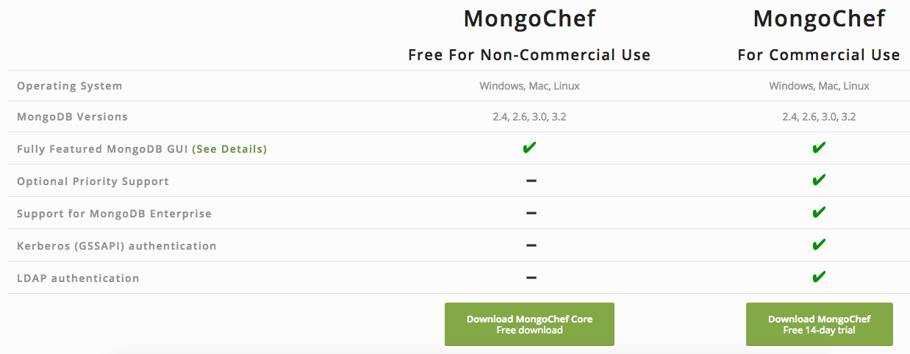
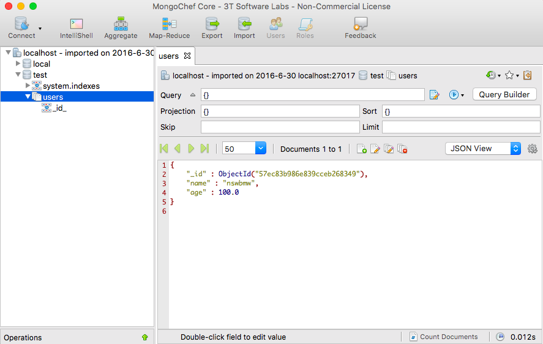

1.2.1 安装与启动 MongoDB
- Windows 用户向导：https://docs.mongodb.com/manual/tutorial/install-mongodb-on-windows/
- Linux 用户向导：https://docs.mongodb.com/manual/administration/install-on-linux/
- Mac 用户向导：https://docs.mongodb.com/manual/tutorial/install-mongodb-on-os-x/
1.2.2 Robomongo 和 Mongochef
Robomongo
Robomongo 是一个基于 Shell 的跨平台开源 MongoDB 可视化管理工具，支持 Windows、Linux 和 Mac，嵌入了 JavaScript 引擎和 MongoDB mongo，只要你会使用 mongo shell，你就会使用 Robomongo，它还提了供语法高亮、自动补全、差别视图等。
下载并安装成功后点击左上角的 Create 创建一个连接，给该连接起个名字如: localhost，使用默认地址（localhost）和端口（27017）即可，点击 Save 保存。

双击 localhost 连接到 MongoDB 并进入交互界面，尝试插入一条数据并查询出来，如下所示:

MongoChef
MongoChef 是另一款强大的 MongoDB 可视化管理工具，支持 Windows、Linux 和 Mac。
MongoChef 下载地址，我们选择左侧的非商业用途的免费版下载。

安装成功后跟 Robomongo 一样，也需要创建一个新的连接的配置，成功后双击进入到 MongoChef 主页面，如下所示:

还可以使用 shell 模式:

小提示: MongoChef 相较于 Robomongo 更强大一些，但 Robomongo 比较轻量也能满足大部分的常规需求，所以哪一个适合自己还需读者自行尝试。
下一节：2.1 require